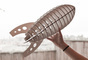

- 1. Alex and Frederic Thoughts On Microsoft Build 2 days ago techcrunch.com AOL.com TechCrunch TV 2015
- 2. Tesla’s $3,000 Powerwall Will Let Households Run Entirely On Solar Energy 2 days ago techcrunch.com TechCrunch.com (AOL) Jon Russell Tesla
- 3. How Old Do You Look? Microsoft Built A Robot That Tries To Guess Your Age 2 days ago techcrunch.com (sponsored) Greg Kumparak IBM
- 4. Uber Is Quietly Testing A Massive Merchant Delivery Program 4 days ago techcrunch.com TechCrunch.com (AOL) Jordan Crook TC
- 5.  You Need To Be A Billion Just To Make A Million 6 days ago techcrunch.com TechCrunch.com (AOL) Danny Crichton TC
-
6.
Periscope Saw 1 Million Sign-Ins During Its First 10 Days 4 days ago techcrunch.com TechCrunch.com (AOL) Josh Constine TC
- 7. Secret Expected To Shut Down 3 days ago techcrunch.com TechCrunch.com (AOL) Josh Constine secret
- 8. Apple Watch Review 3 days ago techcrunch.com TechCrunch.com (AOL) Darrell Etherington TC
- 9. Microsoft’s New Browser Will Be Called Microsoft Edge 3 days ago techcrunch.com TechCrunch.com (AOL) Greg Kumparak TC
- 10. After Exiting Marko Media, Mark Pearson Launches New London-Based VC Fund And Startup Studio a day ago techcrunch.com AOL.com Steve O'Hear TC